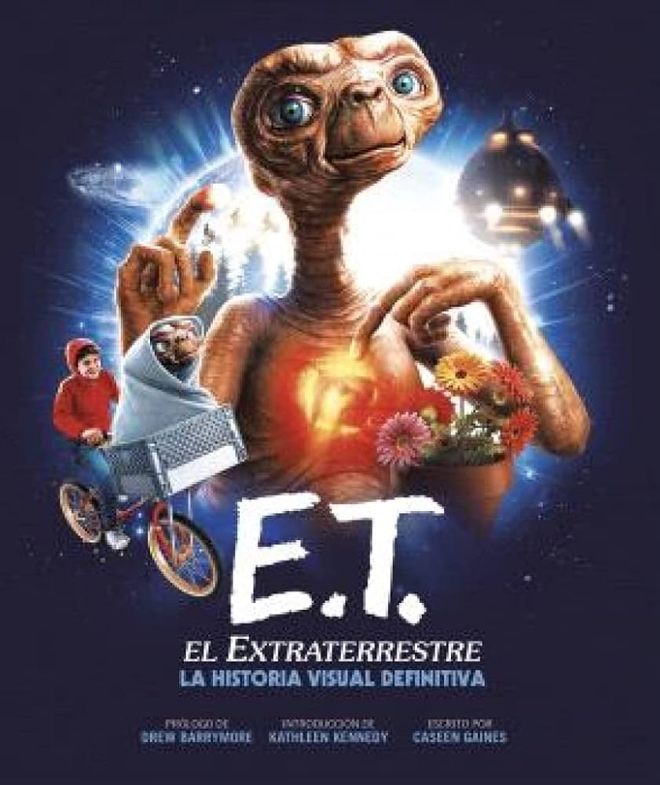

Bienvenido a CineViejo, tu destino favorito para disfrutar de las mejores películas en pantalla grande. Explora nuestra cartelera, descubre los próximos estrenos y reserva tus entradas con anticipación.
Hora: 22:00
ET, el extraterrestre es una película de ciencia ficción de 1982 dirigida por Steven Spielberg. La película cuenta la historia de un niño llamado Elliott que hace amistad con un extraterrestre varado en la Tierra, al que llama ET, y lo ayuda a regresar a su hogar.
Para cualquier consulta, no dudes en contactarnos:
Dirección: Calle Circuito Ingenieria 9310B, Torreon Coahuila, Mexico